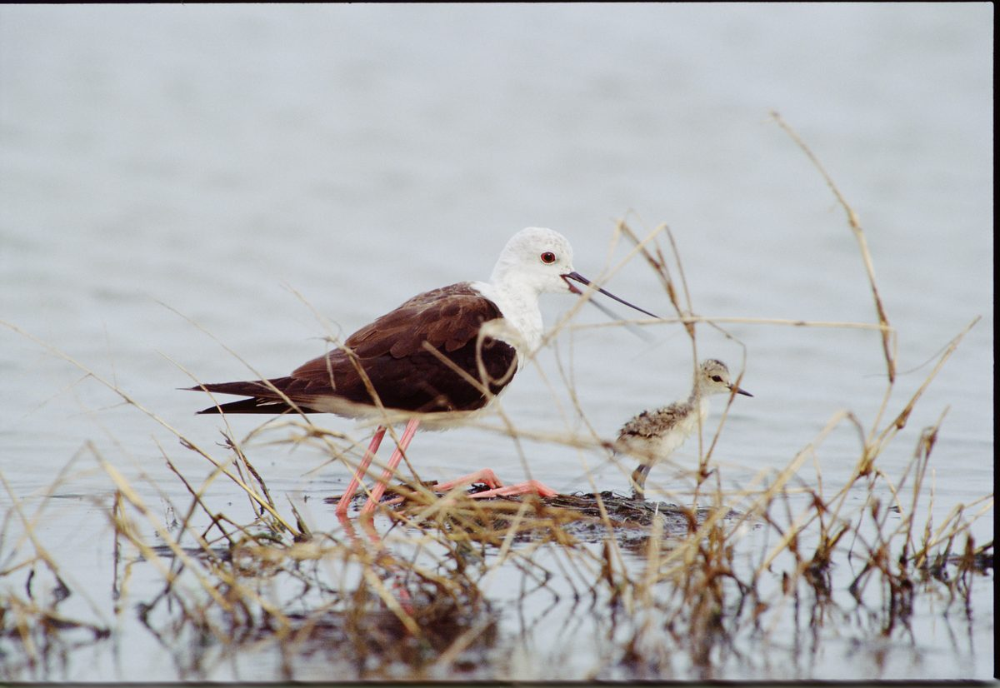
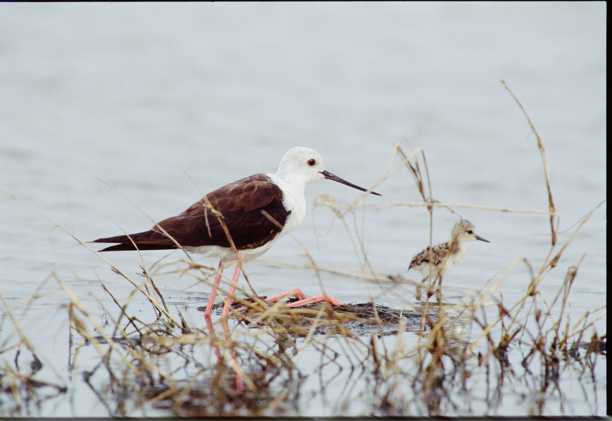
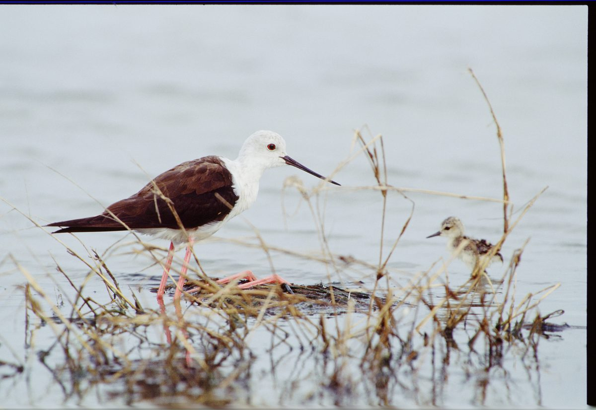

這五張照片，已經拍十年了。愈想在腦中沈澱，它愈經常冒出，更是感動。這隻高蹺鴴媽媽結合了老子「無為」的理念，實踐最恰當的教育課程。
下完雨，「高」媽媽翼下放下「小高」。小高要出遊，NO.1媽媽言辭力阻，小高不聽，一意孤行。NO.2小高外出，媽媽不再嘮叨，目視其離巢，不動聲色，保持距離地關懷。NO.3媽媽表情動作不變，不言不語，見小高自動回家。NO.4媽媽態度如故，小高低下頭，愧見母親。NO.5媽媽接納小高，摟抱牠，仍不言語。
起先，高媽媽言語上盡親職角色，強力關懷而不管（註：好意讓人知道是關懷，侵犯主權就是管）。水深，小高不得如願，受到懲罰，只好回家（媽媽勸說一切，只是未告知水深）。小高意志受阻，源於水深（自然因素），未損及親情動機的依附關係，難為情（見NO.4比NO.2，小高身軀「縮小」許多）之餘，仍願獲得慰藉。偉大的母親，不作馬後砲式的訓誡，不說一句話，用雙翅摟抱小高，以行為語言（舞動羽翅）表達愛意（行為語言數倍於言語的表情效力），完整且有建設性的教育過程告一段落。
NO.2、NO.3、NO.4高媽媽表情動作未曾須臾變化，教育子女的過程中，充分運用老子的「無為」觀，若「無為」是道，是自然的本質，高媽媽能感應自然，也繼承了「無為而無不為」之道，以「為無為，則無不治」的觀念，「行不言之教」、「無為而成」，簡直是聖人，如圖明鑒。聖人無為而民（小高）自化的現象，今日的父母親能像高媽媽那樣不動聲色的管教孩子嗎？怪不得老子說：「不言之教，無為之益，天下希及之」。誰知「上德無為而無以為」的積極教化呢？
NO.4高媽媽對小高愧疚之情（低頭），給了最大的空間（不像水雉爸爸那樣慌於無濟於事的保護，也不像家燕親朋對小孩的熱情照顧，更不像紅鳩父母的放任態度）。只用眼神投出愛意，NO.5以温暖的羽翼，全然地「等待」小孩受懲後需要安慰的心靈。
這個故事，我們看到小高受到「自然的處罰」（副作用最少的最佳教育方式），行為的正當性更進一層，小高不可能埋怨媽媽，反而加深親子依戀關係的價值，高媽媽的親職角色的成功，完全由「無為而成」的理念得來。
早期拍照，有與高蹺鴴作「諮商式互動」的經驗，得「高蹺鴴向我飛」的照片。當聽到高媽媽和孩子間的談話後，才計劃拍下此一系列教育過程的影像，又如願了，感謝偉大的高媽媽。向高媽媽學習，可以間接享受「與造物者遊」的想像幸福感。

NO.1 NO.2

NO.3 NO.4

NO.5